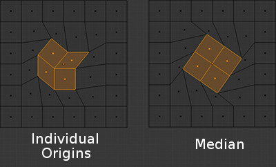

Individual Origins¶
参考
 icon in the 3D View header.
icon in the 3D View header.Ctrl-,In Object Mode¶
各自的原心作旋转
The Origin of an object is shown in the 3D View by a small orange circle. This is highlighted in the image to the right by the red arrow. The origin tells Blender the relative position of that object in 3D space. What you see in the 3D View (vertices, edges etc) is what makes up the object.
While the Origin is equivalent to the center of the object, it does not have to be located in the center of the Mesh. This means that an object can have its center located on one end of the mesh or even completely outside the mesh. For example, the orange rectangle in the image has its Origin located on the far left of the mesh.
Now let us examine: Rotation around the individual origins:
蓝色矩形有位于网格的中心的原心，而橙色矩形有位于左手边的原心。
- When the Pivot Point is set to Individual Origins, the center of each object (indicated by the red arrow) remains in place while the object rotates around it in the path shown by the black arrow.
Rotation around individual origins (middle) compared to the median point (right).
Scaling around individual origins (middle) compared to the median point (right).
In Edit Mode¶
In Edit Mode, setting the Pivot Point to Individual Origins produces different results when the selection mode is set to Vertex, Edge or Face. For example, Vertex mode produces results similar to setting the pivot point to median and Edge mode often produces distorted results. Using Individual Origins in Face mode produces the most predictable results.

按图像文字说明的绕各自面的轴心点旋转。 |

按图像文字说明的绕一组面的轴心点渲染。 |
{kind=link}
上图中可以看出，靠在一起的面在轴心点设置为各自原心的时候进行选择会变形。没有靠在一起的面会按各自原心（中心）旋转。

缩放无接触面。 |

缩放相邻面。 |
面组和多边形可以在他们边界没有变形的时候进行缩放。然而，内部的面不会均匀缩放。

使用面和各自原心为轴心点建模。
一旦你意识到它的局限性和陷阱，此工具可以节省大量的时间，并能获得独特的形状。此 “莲花” 从 12 片面建模用来大约 10 分钟通过重复使用此工作流: 按单独面挤压， 中心作为轴心点 来缩放， 以及 各自原心作为轴心点 来旋转和缩放。